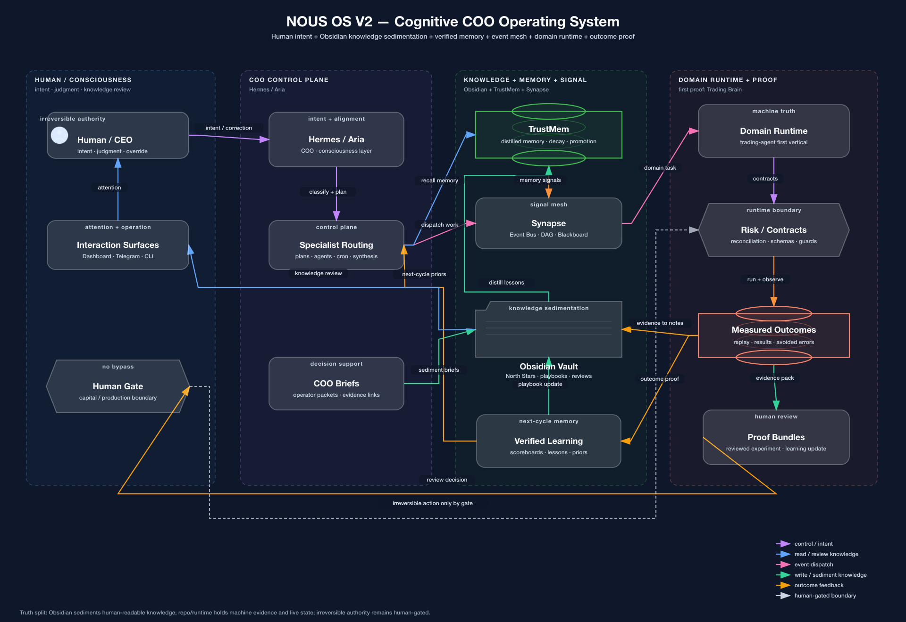

About the name
Why NOUS?
NOUS is a personal research project about the future of AI + human beings: how people and intelligent systems can cooperate cognitively without outsourcing judgment, agency, or responsibility.
Origin
The name points to mind, judgment, and meaning.
Nous comes from the Greek word for intellect, mind, and the faculty that perceives meaning. I chose it because the project is not only about automation. It is about cognition: memory, attention, judgment, reflection, and the way humans decide what matters.
The OS part is also intentional. An operating system coordinates resources. NOUS OS coordinates cognitive resources: human intent, knowledge sedimentation, verified memory, event routing, domain runtime, measured outcomes, and human authority.
The goal is not to make AI replace human thought. The goal is to build a better cognitive partnership.

NOUS OS V2 architecture: human authority, Hermes / Aria, Obsidian, TrustMem, Synapse, domain runtime, and outcome proof.
Personal thread
Exploring AI + human beings with my daughter.
Part of the reason this project matters to me is that I am exploring the future of AI and human beings together with my daughter. That changes the question. It is not just: what can AI do for us? It is also: what kind of thinking habits, judgment, curiosity, and responsibility do we want to preserve and strengthen as AI becomes more capable?
NOUS OS is my way of making that question concrete. It treats AI as a cognitive partner that can remember, challenge, route work, surface evidence, and learn from outcomes. But it also keeps the human role explicit: choosing goals, reviewing meaning, correcting mistakes, and holding authority at irreversible boundaries.
Cognitive collaboration
How Humans and AI can cooperate better.
Memory before action
Do not start every task from zero. Recall what was learned, what failed, and what the human corrected.
Evidence before confidence
Do not confuse fluent output with truth. Tie claims to sources, outcomes, and reviewable artifacts.
Human authority at boundaries
AI may operate the cognitive workflow, but irreversible decisions remain human-gated.
Compounding judgment
The best loop is not faster task completion alone. It is better future judgment for both the person and the system.